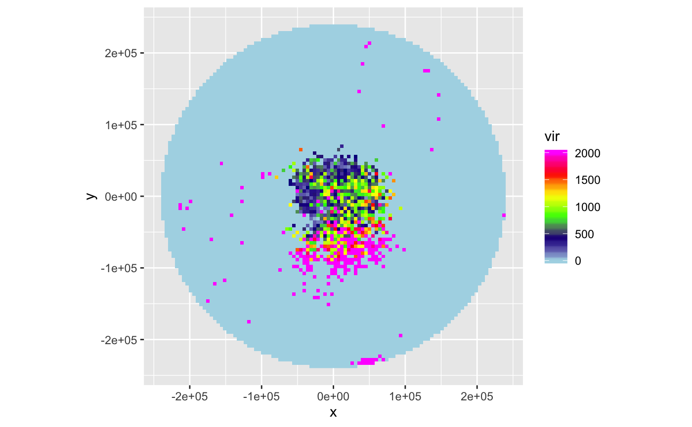
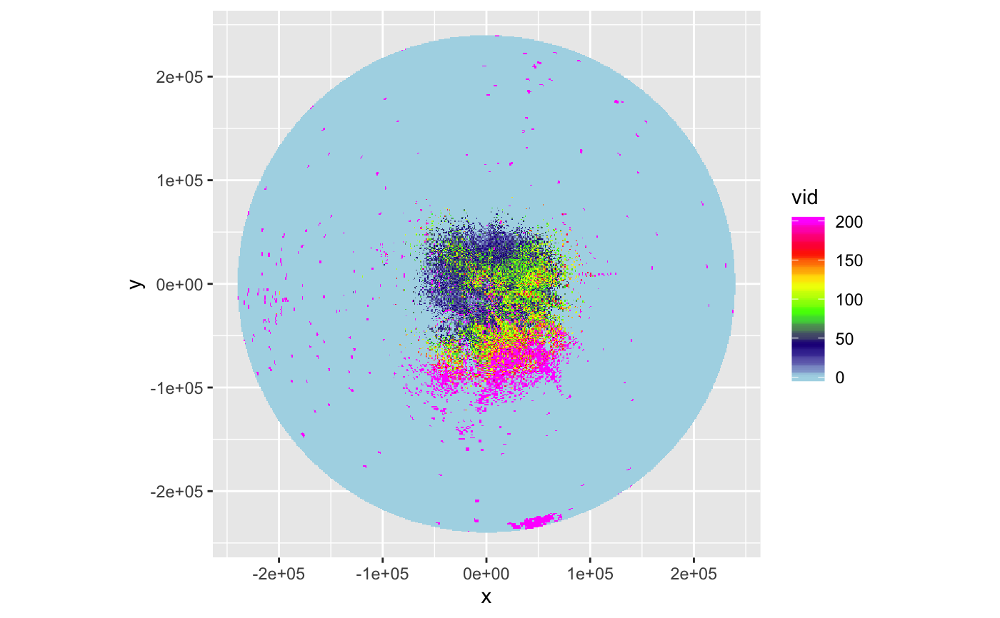
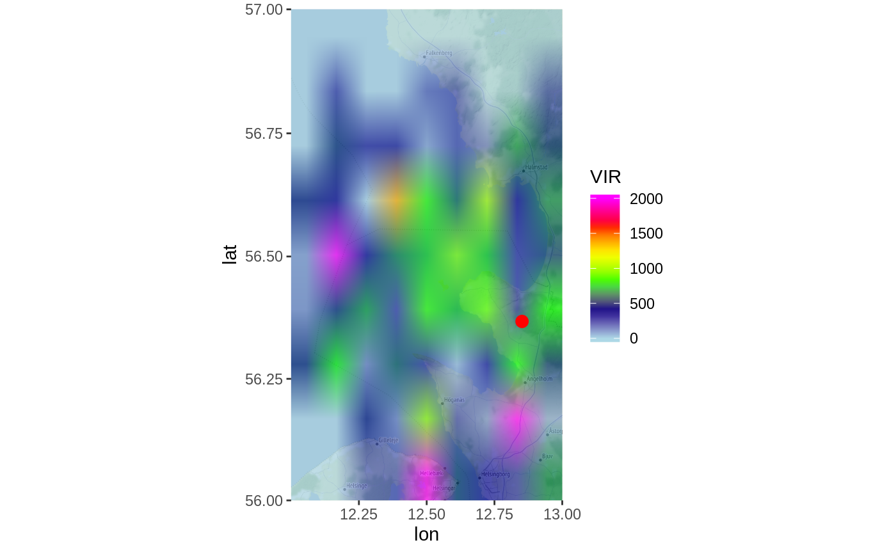
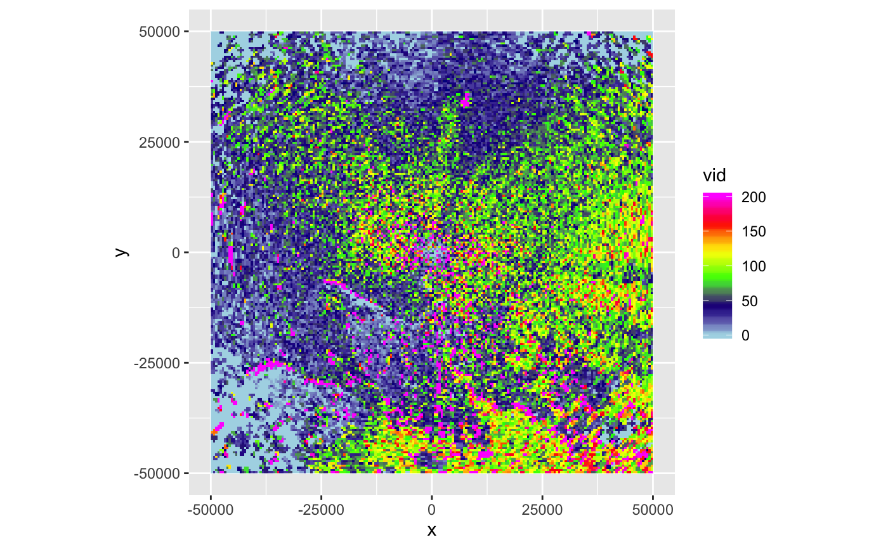

calculates a PPI that corrects for range-effects due to partial beam overlap with the layer of migration (overshooting) at larger distances from the radar
integrate_to_ppi(pvol, vp, nx = 100, ny = 100, xlim, ylim, zlim = c(0, 4000), res, param = "DBZH", lat, lon, antenna, beam_angle = 1, crs, quantity = c("vir", "vid", "correction_factor", "overlap"), k = 4/3, re = 6378, rp = 6357)
| pvol | a polar volume of class pvol |
|---|---|
| vp | a vertical profile of class vp |
| nx | number of raster pixels in the x (longitude) dimension |
| ny | number of raster pixels in the y (latitude) dimension |
| xlim | x (longitude) range |
| ylim | y (latitude) range |
| zlim | altitude range in meter, given as a numeric vector of length two. |
| res | numeric vector of length 1 or 2 to set the resolution of the raster (see res).
If this argument is used, arguments |
| param | reflectivity factor scan parameter on which to base range corrections.
Typically the same parameter from which animal densities are estimated for object |
| lat | Geodetic latitude of the radar in degrees. If missing taken from |
| lon | Geodetic latitude of the radar in degrees. If missing taken from |
| antenna | radar antenna height. If missing taken from |
| beam_angle | numeric. Beam opening angle in degrees, typically the the angle between the half-power (-3 dB) points of the main lobe |
| crs | character or object of class CRS. PROJ.4 type description of a Coordinate Reference System (map projection). When 'NA' (default), an azimuthal equidistant projection with origin at the radar location is used. To use a WSG84 (lat,lon) projection, use crs="+proj=longlat +datum=WGS84" |
| quantity | one or multiple of 'vir','vid','correction_factor', 'overlap' |
| k | Standard refraction coefficient. |
| re | Earth equatorial radius in km. |
| rp | Earth polar radius in km. |
An object of class 'ppi'.
TODO: DETAILS TO BE WRITTEN
If one of lat or lon is missing, the extent of the PPI is take equal to
the extent of the data in the first scan of the polar volume.
Overlap between vertical profile and vertical radiation profile is calculated using beam_profile and stored as quantity 'overlap'.
scans at 90 degree beam elevation (birdbath scans) are ignored.
# locate example polar volume file: pvolfile <- system.file("extdata", "volume.h5", package = "bioRad") # load polar volume example_pvol <- read_pvolfile(pvolfile) # load the corresponding vertical profile for this polar volume data(example_vp) # calculate the range-corrected ppi on a 100x100 pixel raster my_ppi <- integrate_to_ppi(example_pvol, example_vp, nx = 100, ny = 100) # plot the vertically integrated reflectivity (vir) using a 0-2000 cm^2/km^2 color scale: plot(my_ppi, zlim = c(0, 2000))# calculate the range-corrected ppi on finer 1000m x 1000m pixel raster: my_ppi <- integrate_to_ppi(example_pvol, example_vp, res = 1000) # plot the vertically integrated density (vid) using a 0-200 birds/km^2 color scale: plot(my_ppi, param = "vid", zlim = c(0, 200))#> Downloading zoom = 7 ...#>#>#>#>#>#>#>#>#>#>#>#>#>#>#>#># calculate the range-corrected ppi on an even finer 500m x 500m pixel raster, # cropping the area up to 50000 meter from the radar. my_ppi <- integrate_to_ppi(example_pvol, example_vp, res = 500, xlim = c(-50000, 50000), ylim = c(-50000, 50000) ) plot(my_ppi, param = "vid", zlim = c(0, 200))